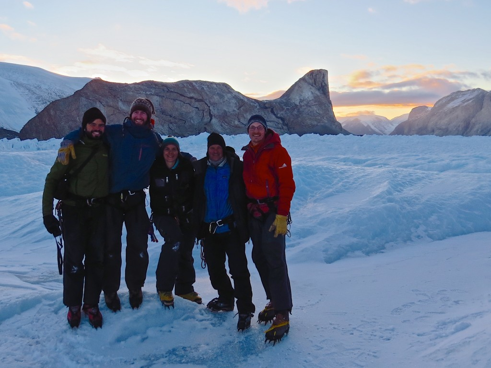

One of the wonderful things about my work are the beautiful places it takes me. Links to photos from two of the major projects I've participated in are below.
Photos from Yahtse Glacier, Alaska
Photos from Uummannaq Fjords, West Greenland

Projects in action
These are some photos from the field